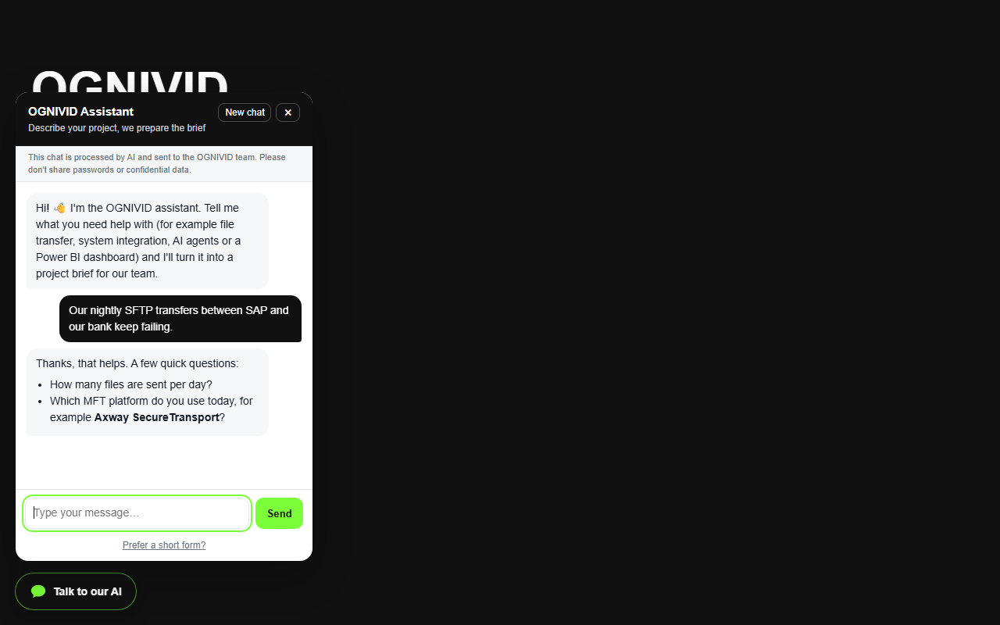

Executive summary
OGNIVID AI Assistant is a WordPress plugin that turns website visitors into well-defined project leads. An AI assistant interviews the visitor like an experienced consultant, summarises the need, asks for confirmation and sends a structured Project Brief to the OGNIVID team as an HTML email with a PDF attached.
It runs on Claude by default, can switch to other AI providers, and falls back to a short form whenever AI is unavailable, so a request is never lost. Every brief is also stored privately in wp-admin.
How it works
Visitor opens the chat
A floating “Talk to our AI” button appears on every page, in the language of the page.
AI interviews the visitor
One or two focused questions at a time: problem, goals, current systems, constraints, urgency, timeline, budget and contact details.
Visitor confirms the summary
The assistant shows a short summary of the brief and only continues after the visitor confirms or corrects it.
Brief is submitted
The model calls the submit_project_brief tool with a strict JSON schema; the server validates name and email before accepting it.
Brief is stored and sent
Saved under AI Briefs, rendered as a PDF and emailed to OGNIVID (with the transcript) and to the customer (with a WhatsApp link).
Form fallback
If AI is off, out of credit, failing or over the daily limit, the same brief is collected with a short form.

Solution architecture
The Project Brief
Every brief, from AI or from the form, uses the same schema, written in the customer’s language.
| Field | Content |
|---|---|
customer | Name, email, company, phone/WhatsApp, role |
title · summary | Short project title and a 2–3 sentence executive summary |
problem | The problem in the customer’s own terms |
goals · requirements | What success looks like and what the solution must do |
current_systems | Platforms and tools already in use |
constraints | Deadline, budget, compliance, security |
urgency | low · medium · high · critical (high/critical are flagged in the email subject) |
timeline · budget | Desired timeline and budget range |
suggested_services | Managed File Transfer, Integration & AI Agents, Data & Dashboards, Other |
initial_recommendation | A short, non-binding first idea |
open_questions | What the team still needs to clarify |
Features
Consultative interview
Short replies, focused follow-ups, about 6–10 questions, then a summary to confirm.
Email + PDF
A clean HTML email and an A4 PDF for the team, plus a copy for the customer.
Admin inbox
AI Briefs lists every brief with customer, urgency, source and status, an unread badge in the menu, a status filter, the full transcript, a protected PDF download, internal notes and one-click reply by email or WhatsApp.
Bilingual
Follows the page language (English or Indonesian) and switches with the visitor.
Provider-agnostic
Claude by default; OpenAI (ChatGPT models), Google Gemini, Mistral, DeepSeek, xAI Grok, Groq, OpenRouter or any OpenAI-compatible endpoint as alternatives.
Never loses a lead
Automatic form fallback when AI is unavailable or a limit is reached.
Security & privacy
Key stays on the server
The API key is stored in WordPress options, never sent to the browser and never echoed back in the settings page.
Server-side history
Conversations live in a server transient; visitors cannot inject fake assistant turns. Claude’s thinking blocks are replayed unchanged.
Abuse limits
Same-origin check, messages per conversation, messages per IP per hour, daily site-wide AI cap, honeypot and minimum fill time on the form.
Strict structured output
The brief tool uses a strict schema and is re-validated and sanitised on the server before anything is saved or sent.
Private PDFs
PDFs are written to a denied folder in uploads and downloaded only through a nonce-protected admin link.
Honest with visitors
The widget states that the chat is processed by AI and asks visitors not to share passwords or confidential data.
Installation
- Download
ognivid-ai-assistant.zipfrom the latest GitHub release (orgit clonethe repository intowp-content/plugins/ognivid-ai-assistant). - In wp-admin go to Plugins → Add New → Upload Plugin, upload the ZIP and activate OGNIVID AI Assistant.
- Open Settings → OGNIVID AI Assistant. The plugin starts in test mode (admins only).
- Choose an AI provider, paste its API key (for example from console.anthropic.com or platform.openai.com), set the recipient email and save. Without a key the assistant works in form mode.
- Make sure WordPress can send email (for example with WP Mail SMTP), test a brief, then turn test mode off.
- Follow up from AI Briefs: new briefs are bold and counted in the menu badge; opening one marks it as read, and the Follow-up box tracks the status (New, Read, Contacted, Proposal sent, Won, Closed) and an internal note.
Requirements: WordPress 6.x, PHP 7.4+ (tested on PHP 8.2), outbound HTTPS from the server, and working email delivery.
How to use
Visitors
- Click Talk to our AI (bottom left) on any page.
- Describe the project and answer the assistant’s questions. Prefer not to chat? Click Prefer a short form?.
- Check the summary, confirm it, and receive a reference number on screen plus a copy of the brief by email.
Site owner
- A new brief arrives by email (with PDF) and appears in wp-admin → AI Briefs with a number badge in the menu.
- Open the brief to read it (it is marked as read), download the PDF and read the conversation transcript.
- Use Reply by email or Chat on WhatsApp in the Follow-up box, then set the status (Contacted, Proposal sent, Won, Closed) and add an internal note.
- Use the status filter above the list to see only new or open briefs.
Switching AI provider
- Choose the provider in Settings → OGNIVID AI Assistant, paste that provider’s API key and type one of its model IDs, then save.
- Open the site as admin and send a test message. If the chat switches to the form, the key, model ID or credit is wrong; the reason is in the PHP error log.
Settings reference
| Setting | Default | Purpose |
|---|---|---|
| Show the assistant | on | Master switch for the widget |
| Test mode | on | Only logged-in administrators see and can use the assistant |
| AI provider | Anthropic | Anthropic, OpenAI, Gemini, Mistral, DeepSeek, xAI, Groq, OpenRouter, custom OpenAI-compatible, or Off (form only) |
| Model | claude-opus-5-5 | Any model ID of the selected provider; change it when you switch provider (for example a GPT model for OpenAI). Claude Sonnet 5.5 / Haiku 5.5 cost less than Opus. |
| Effort (Claude) | medium | Thinking depth: low, medium or high |
| Send briefs to | hello@ognivid.com | Owner inbox; optional copy to the customer |
| WhatsApp number | 62852… | Follow-up link shown to customers |
| Button position | bottom left | Avoids overlapping a WhatsApp button on the right |
| Limits | 25 · 1500 · 40 · 60 | Messages per conversation · characters per message · messages per IP per hour · AI conversations per day |
AI providers
| Provider | How it is called | Notes |
|---|---|---|
| Anthropic Claude | Messages API (/v1/messages, version 2026-10-21) with a strict tool, prompt caching and server-side refusal fallback | Recommended. Pay as you go; set a monthly spend limit in the Console. |
| OpenAI (ChatGPT) | Chat Completions API (api.openai.com/v1/chat/completions) with function calling | Use the GPT model IDs from your OpenAI account. Key: platform.openai.com → API keys. A ChatGPT Plus subscription does not include API access. |
| Google Gemini | OpenAI-compatible endpoint | Has a free tier; check its data-use terms before sending customer data. Key: aistudio.google.com. |
| Mistral AI | OpenAI-compatible endpoint (api.mistral.ai) | European provider. Key: console.mistral.ai. |
| DeepSeek | OpenAI-compatible endpoint (api.deepseek.com) | Low cost. Key: platform.deepseek.com. |
| xAI (Grok) | OpenAI-compatible endpoint (api.x.ai) | Grok models. Key: console.x.ai. |
| Groq · OpenRouter | OpenAI-compatible endpoint | Open-source models, free quotas that change often. OpenRouter gives access to hundreds of models (including GPT, Claude, Llama) with one key. |
| Custom | Any OpenAI-compatible /chat/completions URL | For self-hosted models (e.g. Ollama behind a gateway). |
| Off | No AI | Form only, free forever. |
REST API
| Endpoint | Request (JSON) | Response |
|---|---|---|
POST /wp-json/ognivid-ai/v1/chat | { sid, message, lang } | { sid, reply, done, mode }, where mode: "form" asks the widget to show the form |
POST /wp-json/ognivid-ai/v1/form | { name, email, company, phone, title, problem, systems, service, urgency, timeline, budget, lang, ts, website } | { ok, reply } |
Both endpoints accept same-origin requests only. In test mode they also require a logged-in administrator (the widget sends the REST nonce).
Components
| File | Responsibility |
|---|---|
ognivid-ai-assistant.php | Plugin bootstrap and hooks |
includes/class-oaa-settings.php | Settings page, defaults and sanitising |
includes/class-oaa-provider.php | System prompt, brief schema, Claude and OpenAI-compatible adapters |
includes/class-oaa-chat.php | REST endpoints, sessions, limits, widget loading |
includes/class-oaa-brief.php | AI Briefs post type, PDF, HTML email, admin view |
assets/widget.js · widget.css | Chat and form UI (no dependencies) |
includes/fpdf/ | FPDF 1.9 library for PDF generation (its own permissive licence) |
Troubleshooting
| Symptom | What to check |
|---|---|
| The button does not appear | Test mode is on (log in as admin), the assistant is switched off, or a page cache is serving an older page. |
| Chat immediately shows the form | No API key, provider set to Off, out of credit, or the daily limit was reached. Errors are written to the PHP error log with the prefix “OGNIVID AI Assistant:”. |
| Brief saved but no email | Send a test from WP Mail SMTP → Tools. If it succeeds, check spam, forwarders on the recipient mailbox, and how the mailbox is connected to your mail app (IMAP). |
| PDF missing | The uploads folder must be writable; the email is still sent without an attachment. |
Roadmap
- WhatsApp notification for new briefs (via a WhatsApp Business API provider).
- Streaming replies for faster perceived response.
- Reply to a brief and track its status directly from wp-admin.
- Simple analytics: conversations, completion rate and top services.